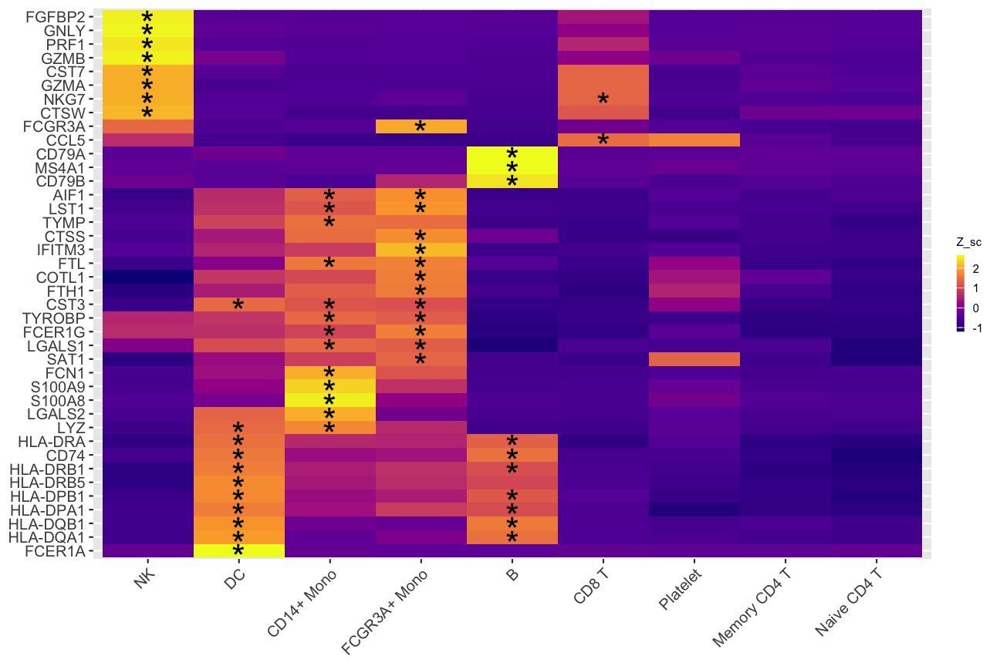

Using pochi with Seurat
pochi-Seurat.RmdIntroduction
Installation
Currently, pochi is available at Github and can be downloaded using the devtools (or remotes) package.
devtools::install_github("diegoalexespi/pochi")Loading data
Loading required packages
The pochi package
operates on Seurat
objects. We load the Seurat, SeuratData, and
pochi packages here for our analyses, as well as the
magrittr package in order to improve legibility of code
through using the pipe %>% operator.
We load the pbmc3k data from the SeuratData package.
InstallData("pbmc3k")
pbmc3k_seurat <- LoadData("pbmc3k")
set.seed(789)
pbmc3k_seurat <- pbmc3k_seurat[,!is.na(pbmc3k_seurat$seurat_annotations)]
pbmc3k_seurat <- NormalizeData(pbmc3k_seurat)
pbmc3k_seurat$condition <- sample(c("WT", "KO"), size = ncol(pbmc3k_seurat), replace = TRUE)
pbmc3k_seurat$replicate <- sample(1:3, size = ncol(pbmc3k_seurat), replace = TRUE)
pbmc3k_seurat@meta.data %>% head()## orig.ident nCount_RNA nFeature_RNA seurat_annotations condition
## AAACATACAACCAC pbmc3k 2419 779 Memory CD4 T WT
## AAACATTGAGCTAC pbmc3k 4903 1352 B KO
## AAACATTGATCAGC pbmc3k 3147 1129 Memory CD4 T WT
## AAACCGTGCTTCCG pbmc3k 2639 960 CD14+ Mono WT
## AAACCGTGTATGCG pbmc3k 980 521 NK KO
## AAACGCACTGGTAC pbmc3k 2163 781 Memory CD4 T WT
## replicate
## AAACATACAACCAC 3
## AAACATTGAGCTAC 3
## AAACATTGATCAGC 3
## AAACCGTGCTTCCG 1
## AAACCGTGTATGCG 2
## AAACGCACTGGTAC 1Visualizations
AbundancePlot
AbundancePlot(pbmc3k_seurat, group.by = "seurat_annotations", split.by = "condition", replicate.by = "replicate")
AbundancePlot(pbmc3k_seurat, group.by = "seurat_annotations", split.by = "condition", replicate.by = "replicate", paired = TRUE, draw_paths = TRUE, sina_shift = FALSE)
AssignQuantiles
pbmc3k_seurat <- AssignQuantiles(pbmc3k_seurat, feature = "B2M", assay = "RNA", slot = "data", split.by = "condition", quantile.probs = c(0,0.4,0.8,1))
RidgePlot(pbmc3k_seurat, group.by = "B2M.quantile", features = "B2M")## Picking joint bandwidth of 0.049
BackGatePlot
BackgatePlot(pbmc3k_seurat, feature1 = "CD4", feature2 = "CD8A", metadata.col = "seurat_annotations", metadata.selection = "Memory CD4 T")
BackgatePlot(pbmc3k_seurat, feature1 = "CD4", feature2 = "CD8A", metadata.col = "seurat_annotations", metadata.selection = "CD8 T")
Heatmaps
rna_markers <- presto::wilcoxauc(pbmc3k_seurat, group_by = "seurat_annotations")
top_rna_markers <- rna_markers %>%
dplyr::filter(padj < 0.01, logFC > 0) %>%
dplyr::group_by(group) %>%
dplyr::slice_min(padj, with_ties = FALSE, n = 3)
DoStarHeatmap(pbmc3k_seurat, diff_exp_results = rna_markers %>% dplyr::filter(group != "Platelet"), assay = "RNA", slot = "data", group.by = "seurat_annotations", p_val_choice = 0.01, logFC_choice = 2)## diff_exp_results in Presto format## ==================================================## Scale for y is already present.
## Adding another scale for y, which will replace the existing scale.## Scale for x is already present.
## Adding another scale for x, which will replace the existing scale.
## Scale for y is already present.
## Adding another scale for y, which will replace the existing scale.
## Scale for x is already present.
## Adding another scale for x, which will replace the existing scale.## Warning: Removed 40 rows containing missing values (`geom_text()`).
DoClusteredHeatmap(pbmc3k_seurat, features = top_rna_markers$feature, assay = "RNA", group.by = "seurat_annotations")## ==================================================## Scale for y is already present.
## Adding another scale for y, which will replace the existing scale.
## Scale for x is already present.
## Adding another scale for x, which will replace the existing scale.
## Scale for y is already present.
## Adding another scale for y, which will replace the existing scale.
## Scale for x is already present.
## Adding another scale for x, which will replace the existing scale.

ModulePlot
pbmc3k_seurat <- CellCycleScoring(pbmc3k_seurat, s.features = cc.genes.updated.2019$s.genes, g2m.features = cc.genes.updated.2019$g2m.genes)## Warning: The following features are not present in the object: DTL, UHRF1, EXO1,
## CASP8AP2, E2F8, not searching for symbol synonyms## Warning: The following features are not present in the object: PIMREG, BUB1,
## HJURP, CDCA3, JPT1, TTK, CDC25C, DLGAP5, CDCA2, ANLN, GAS2L3, not searching for
## symbol synonyms
ModulePlot(pbmc3k_seurat, features = "S.Score", assay = "RNA", split.by = "condition", replicate.by = "replicate")## Error in (function (x, cutpoints = c(0.3, 0.6, 0.8, 0.9, 0.95), symbols = if (numeric.x) c(" ", : argument "x" is missing, with no defaultSession Info
## R version 4.1.1 (2021-08-10)
## Platform: x86_64-apple-darwin17.0 (64-bit)
## Running under: macOS Big Sur 10.16
##
## Matrix products: default
## BLAS: /Library/Frameworks/R.framework/Versions/4.1/Resources/lib/libRblas.0.dylib
## LAPACK: /Library/Frameworks/R.framework/Versions/4.1/Resources/lib/libRlapack.dylib
##
## locale:
## [1] en_US.UTF-8/en_US.UTF-8/en_US.UTF-8/C/en_US.UTF-8/en_US.UTF-8
##
## attached base packages:
## [1] stats graphics grDevices utils datasets methods base
##
## other attached packages:
## [1] tidyr_1.2.1 ggplot2_3.4.0 pochi_0.1.0
## [4] pbmc3k.SeuratData_3.1.4 cbmc.SeuratData_3.1.4 SeuratData_0.2.1
## [7] SeuratObject_4.1.3 Seurat_4.3.0
##
## loaded via a namespace (and not attached):
## [1] backports_1.4.1 systemfonts_1.0.4 plyr_1.8.8
## [4] igraph_1.3.5 lazyeval_0.2.2 sp_1.5-1
## [7] splines_4.1.1 listenv_0.9.0 scattermore_0.8
## [10] digest_0.6.31 htmltools_0.5.4 viridis_0.6.2
## [13] fansi_1.0.3 magrittr_2.0.3 memoise_2.0.1
## [16] tensor_1.5 cluster_2.1.4 ROCR_1.0-11
## [19] globals_0.16.2 matrixStats_0.63.0 pkgdown_2.0.7
## [22] spatstat.sparse_3.0-0 colorspace_2.0-3 rappdirs_0.3.3
## [25] ggrepel_0.9.2 textshaping_0.3.6 xfun_0.36
## [28] dplyr_1.0.10 crayon_1.5.2 jsonlite_1.8.4
## [31] progressr_0.12.0 spatstat.data_3.0-0 survival_3.4-0
## [34] zoo_1.8-11 glue_1.6.2 polyclip_1.10-4
## [37] gtable_0.3.1 leiden_0.4.3 car_3.1-1
## [40] future.apply_1.10.0 abind_1.4-5 scales_1.2.1
## [43] DBI_1.1.3 rstatix_0.7.1 spatstat.random_3.0-1
## [46] miniUI_0.1.1.1 Rcpp_1.0.9 viridisLite_0.4.1
## [49] xtable_1.8-4 reticulate_1.26 htmlwidgets_1.6.0
## [52] httr_1.4.4 RColorBrewer_1.1-3 ellipsis_0.3.2
## [55] ica_1.0-3 farver_2.1.1 pkgconfig_2.0.3
## [58] sass_0.4.4 uwot_0.1.14 deldir_1.0-6
## [61] utf8_1.2.2 labeling_0.4.2 tidyselect_1.2.0
## [64] rlang_1.0.6 reshape2_1.4.4 later_1.3.0
## [67] munsell_0.5.0 tools_4.1.1 cachem_1.0.6
## [70] cli_3.5.0 generics_0.1.3 broom_1.0.2
## [73] ggridges_0.5.4 ggdendro_0.1.23 evaluate_0.19
## [76] stringr_1.5.0 fastmap_1.1.0 yaml_2.3.6
## [79] ragg_1.2.4 goftest_1.2-3 knitr_1.41
## [82] fs_1.5.2 fitdistrplus_1.1-8 purrr_1.0.0
## [85] RANN_2.6.1 pbapply_1.6-0 future_1.30.0
## [88] nlme_3.1-161 mime_0.12 ggrastr_1.0.1
## [91] compiler_4.1.1 rstudioapi_0.14 beeswarm_0.4.0
## [94] plotly_4.10.1 png_0.1-8 ggsignif_0.6.4
## [97] spatstat.utils_3.0-1 tweenr_2.0.2 tibble_3.1.8
## [100] bslib_0.4.2 stringi_1.7.8 highr_0.10
## [103] desc_1.4.2 forcats_0.5.2 lattice_0.20-45
## [106] Matrix_1.5-1 vctrs_0.5.1 pillar_1.8.1
## [109] lifecycle_1.0.3 spatstat.geom_3.0-3 lmtest_0.9-40
## [112] jquerylib_0.1.4 RcppAnnoy_0.0.20 data.table_1.14.6
## [115] cowplot_1.1.1 irlba_2.3.5.1 httpuv_1.6.7
## [118] patchwork_1.1.2 R6_2.5.1 promises_1.2.0.1
## [121] KernSmooth_2.23-20 gridExtra_2.3 vipor_0.4.5
## [124] parallelly_1.33.0 codetools_0.2-18 MASS_7.3-58.1
## [127] assertthat_0.2.1 rprojroot_2.0.3 withr_2.5.0
## [130] presto_1.0.0 sctransform_0.3.5 parallel_4.1.1
## [133] grid_4.1.1 rmarkdown_2.19 carData_3.0-5
## [136] Rtsne_0.16 ggpubr_0.5.0 ggforce_0.4.1
## [139] spatstat.explore_3.0-5 shiny_1.7.4 ggbeeswarm_0.7.1